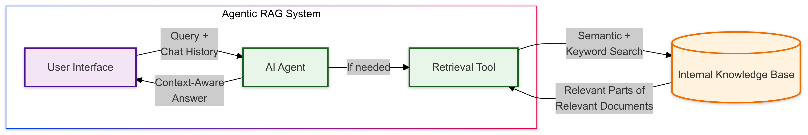
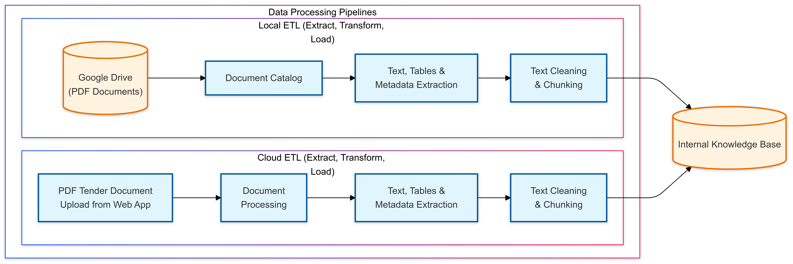

PROFESSIONAL PROJECTS (2024–2025)
Building production AI systems and providing strategic AI consulting for enterprise clients.
Enterprise Consulting
-
Banking Sector AI Consulting – HPB d.d. (2025)
AI strategy consulting for senior bank leadership—board member and department directors.
-
Pharmaceutical AI Consulting & RAG PoC – Belupo d.d. (2024–2025)
AI strategy consulting and education for R&D department and directors (2025). Earlier RAG chatbot proof-of-concept for 160+ medication PDFs using LangGraph, Weaviate hybrid search, multi-LLM support (2024).
- Tech Stack: LangGraph state machine, Weaviate vector database with 6 specialized collections, Multi-LLM support (Claude, Gemini, GPT-4), Streamlit UI with async streaming
Full-Stack AI Applications
-
Construction Coordination Platform (Q4 2025)
Full-stack app replacing manual Excel workflow for county government. Reduced search time from 10-15 min to <30 sec. 5-week delivery.
- Tech Stack: FastAPI, React 19/TypeScript, PostgreSQL 17 with JSONB, Firebase Auth, GCP Cloud Run
- Features: Data migration from multiple Excel sources, multi-format Excel/PDF exports with Croatian localization, 9-tab detail interface
-
Medical Transcription System (2025)
Desktop app for Croatian medical dictations across specializations. Gemini AI integration, real-time transcription with auto-typing, template system.
- Tech Stack: Python/Tkinter, Google Gemini 2.5 Pro via Vertex AI, Firebase Auth + Cloud Functions, GCP deployment
- Features: Global hotkeys, Croatian medical terminology optimization, pytest tests with 95% coverage
-
Energy Efficiency RAG Platform – VIREAS (2024–2025)
Agentic RAG system providing renewables and energy efficiency guidance for citizens, developed for regional energy agency. Includes Prefect ETL pipeline and MCP server for Claude Desktop integration.
- Tech Stack: FastAPI + LangGraph, Weaviate hybrid search, Voyage AI reranking, Multi-LLM support (Claude, Gemini 2.5, GPT-4, Groq), React 19/Vite frontend
- Features: SSE streaming chat, tender document management, Firebase Auth with RBAC, usage quota system
- Platform Overview | Mobile Version | Live Site
Screenshots:


Architecture:


AI Automation & Data Processing
-
BOM Extraction System (2025)
Automated Bill of Materials extraction from German-language manufacturing documents. Reduced 3-4 hour manual process to minutes.
- Tech Stack: AI-powered document extraction, Python (pandas, openpyxl, reportlab), multi-format output (Excel/PDF/JSON)
- Features: Hierarchy processing, material aggregation, standard sheet optimization, EN standards compliance tracking
-
Automated Content Generation (2025)
Blog automation with LangGraph 8-node workflow + Perplexity research integration. Custom Vertex AI fine-tuning pipeline for Gemini. Video pipeline for TikTok/Reels using N8N.
- Blog Pipeline: Dual generation paths (fine-tuned Gemini / multi-agent), AI-powered internal linking, SEO metadata generation
- Fine-tuning: Custom Vertex AI supervised fine-tuning workflow
- Video Pipeline: N8N orchestration, Gemini TTS, Imagen4 image generation, Shotstack video composition
-
Text-to-SQL for Industrial Production (2025)
Natural language to SQL using LangGraph and open-source LLMs (Ollama). Enables operators to query batch data using natural language instead of SQL.
- Tech Stack: LangGraph agentic workflows, Ollama (Gemma 3 27B, Qwen2.5 Coder 32B), Streamlit UI, SQL Server
- Features: 8-category query classification, SQL safety validation, auto-visualization with Plotly
Websites
-
SmartWay Design Portal (2025/6)
Full-stack e-content platform for an electrical engineering design company. Content store with bank transfer payment flow and automated purchase tracking.
- Newsletter: Built-in composer with block editor, subscriber management, CSV import, batch sending, and welcome email automation — serving two brands from one admin panel
- Admin: Role-based dashboard, GDPR-compliant account management
- Tech Stack: React 18/TypeScript, Firebase (Auth, Firestore, Cloud Functions, Storage), Tailwind CSS, shadcn/ui
- techXflow Company Website (2025) – Multilingual AI consulting website. React 19/TypeScript, Tailwind CSS 4, trilingual (EN/DE/HR). Live Site
EARLIER & PERSONAL PROJECTS
-
StudyBuddy Educational App (2023)
Full-stack AI study assistant implementing OCR-to-Q&A workflows before ChatGPT offered similar multimodal capabilities. Photo upload → OCR → AI-generated Q&A pairs with context-aware follow-up conversations.
- Backend: Flask/Gunicorn REST API, Google Cloud Vision OCR, OpenAI GPT for Q&A generation, ChromaDB RAG, Firestore, Firebase Auth with role-based access
- Frontend: Flutter cross-platform app (iOS, Android, Web, macOS, Linux, Windows), multi-language support (EN/DE/HR/HU)
- GitHub Repository
- Chatbot RAG Demo (2024) – FastAPI backend for web-based chat with Firebase Auth, Firestore, WebSockets, LLamaIndex RAG.
- Machine Learning Manual (2024) – Structured ML methodology based on Kaggle's Titanic dataset. GitHub
- Flutter OpenAI App (2023) – GPT Chat, Whisper, and DALL-E integration. GitHub
- Robotic Arm System (2019) – Raspberry PI with Python GUI for Fischertechnik robotic arm control. GitHub
- Home Automation (2020–2021) – ComfortClick-based system with integrated security (DSC) and adaptive heating via KNX/Modbus.
- Environmental Monitoring (2020) – Raspberry PI webserver for temperature, humidity, and PM2.5/PM10 visualization.